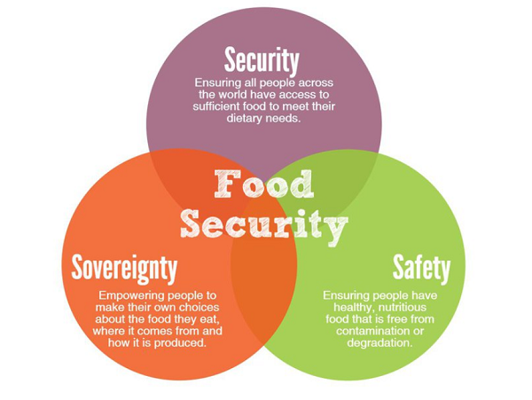
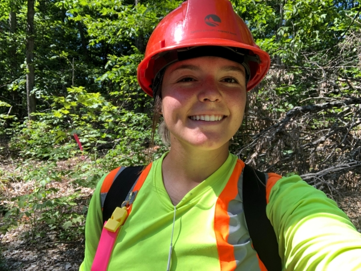

The People of the Kawartha Lakes and Haliburton Communities are in
need of support for increasing food security. There are multiple methods
of implementing a support system meant to increase Food Security in various
ways, including short-term relief (donations), capacity-building
strategies (food banks and soup kitchens), and system redesign
strategies. System Redesign strategies are those that would make free food
more accessible, continue the Basic Income Guarantee, increase Social
Assistance rates, and increase Affordable Housing, which would help
eliminate the need for the first two means.

The Problem
The Solution >>
According to The Lindsay Advocate, there are "10,000 citizens in the
Kawartha Lakes region that don't have enough to eat." The level of food
insecurity in this region is one of the larget in the province, sitting
at 13.5% compared to the provincial average of 11.9%. Ultimately the
public needs more resources and strategies that can increase food security.
One resource that can be made available is information on publicly
accessible Fruit-Bearing Trees in the Kawarthas, which represents a system
redesign strategy but increasing accessibility to free food. This will be
represented by a web map. Populated by the Public, Used by the Public.
Solving the issue of hunger in this area is a large feat. This group is
not, by any means, claiming to be able to solve the issue with this project.
We are, however, going to help the Kawartha Lakes and Haliburton Communities
with their goal to provide more resources to the public on the information
and locations of locally-grown, publicly accessible Fruit-Bearing Trees in
the region. This project will consist of a Map to display information and the
locations of locally-grown and publicly accessible Fruit-Bearing Trees, a Form
for the public to use to submit new tree locations and information, links for
the public to learn how to utilize the fruit of those trees, and guides to help
the public identify trees properly.
Meet the Crew!
Korey Hayes
Acting as the Web and Programming coordinator, Korey is a Fleming College Forestry Technician graduate currently in the GIS Applications Specialist program.
Navjot Kaur Sodhi
Acting as the File Manager and Technology Facilitator, Navjot is a Punjabi University Masters of Astronomy and Space Physics program graduate, currently in the GIS Cartography Specialist program.

Riley Sweeney
Acting as the project administrator, Riley is a Fleming College Forestry Technician graduate currently in the GIS Applications Specialist program